City of Tomorrow is set 125 years in the future on Earth. After decades of severe pollution and environmental degradation, the brightest minds came together to engineer a sustainable city in the sky — free from the toxic conditions on the ground.
But sustainability alone wasn't enough. Early in the city's history, the lack of entertainment and leisure led to social unrest. The founders realized a balanced life — with time for community, culture, and joy — was as essential as clean air. This gave rise to the Cultural District, and every building's playful form became a symbolic commitment to that balance.
As my NYU Tandon capstone, I built this world over 15 weeks — from narrative and concept through 3D modeling in Maya, texturing, Arnold rendering, and a live showcase exhibition.
The project followed a structured 15-week arc — from world-building and narrative to modeling, material refinement, rendering, and a physical showcase presentation. Each week was documented on the project blog.
City of Tomorrow is a speculative 3D world-building project that imagines urban life 125 years from now — after an environmental collapse drove humanity to build a sustainable city in the sky. The project was created as a NYU Tandon capstone over 15 weeks, combining narrative design, 3D modeling in Maya, Arnold rendering, and a live showcase exhibition.
The central design question was: if architecture could encode a civilization's values, what would a post-crisis city look like? The answer became a city where every building is shaped like an everyday object — each one a monument to a different aspect of human life that was nearly lost.
Core Thesis: Sustainable cities of the future don't have to be sterile or utilitarian. By embedding cultural meaning into architecture itself, a city can be both technically innovative and deeply human.
Evaluated against the original project goals: narrative clarity, visual coherence, technical execution, and real-world presentation impact.
Three things I would do differently or take further in a next iteration of City of Tomorrow.
City of Tomorrow started as a technical project — build a 3D model — and became a world-building exercise. The strongest learning was that the narrative came first: once "The Great Shift" existed as a premise, every modeling decision had a reason behind it.
The most visited stop at the NYU showcase was the architectural symbolism section of the brochure — people wanted to know what each building meant. That feedback confirmed the thesis: meaning embedded in form is more memorable than form alone.
Key Takeaway: World-building is a design discipline. The strongest environments — in games, film, architecture — are ones where form and meaning are inseparable. That's what City of Tomorrow was trying to prove.
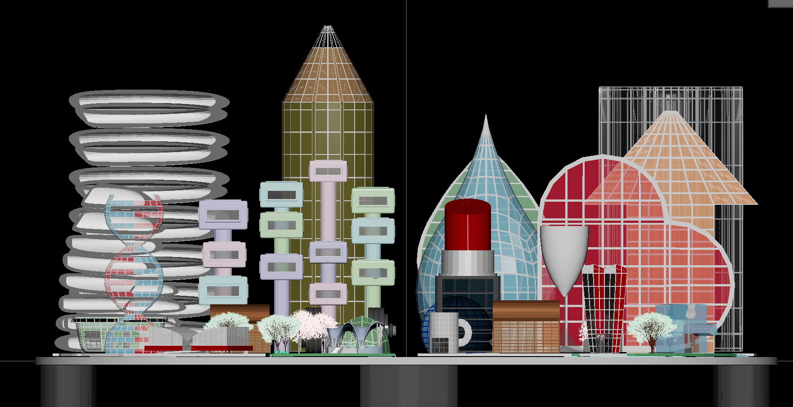
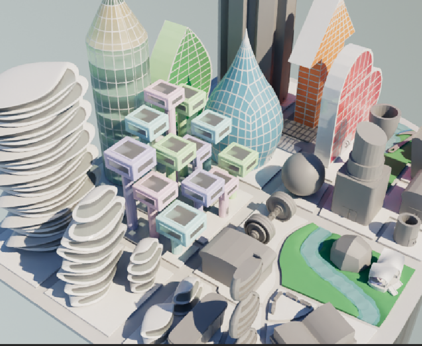
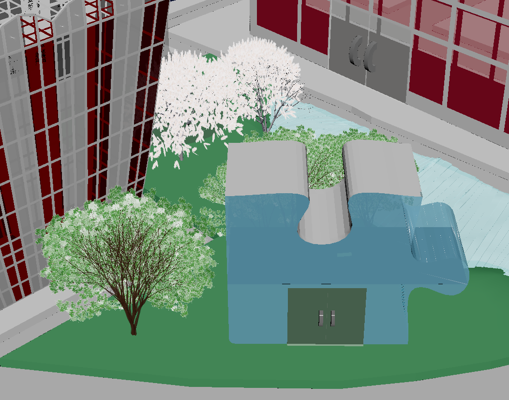
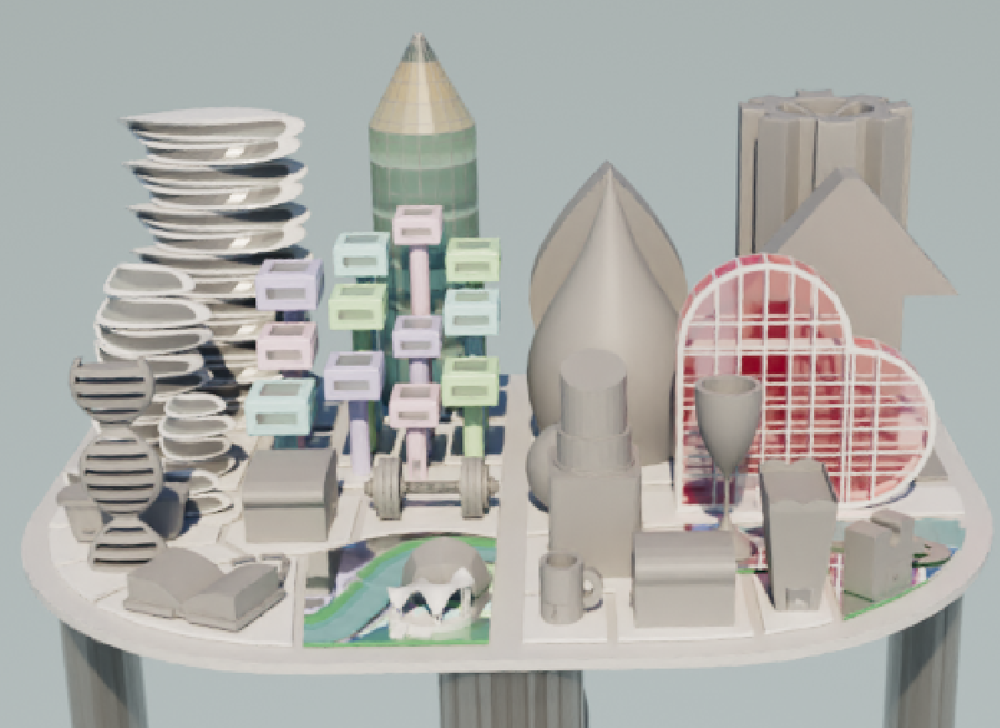
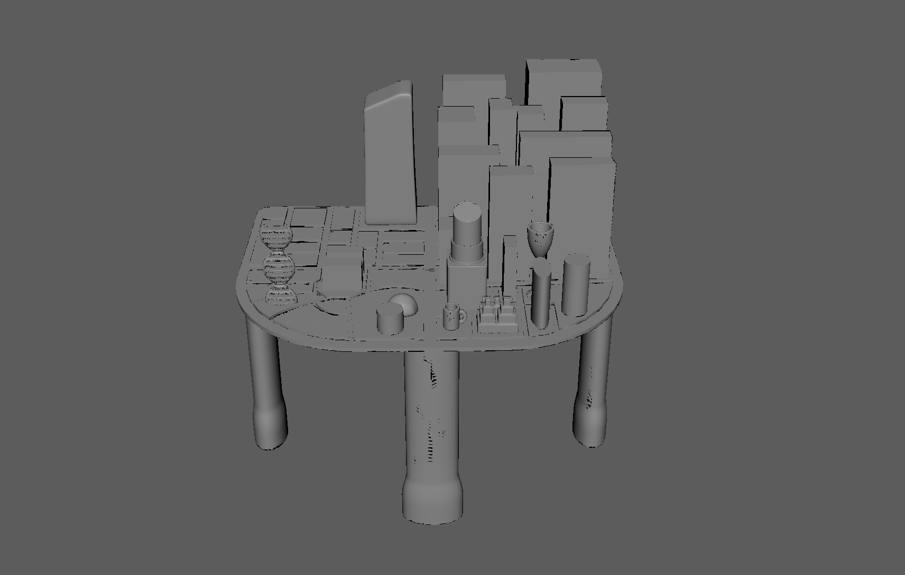
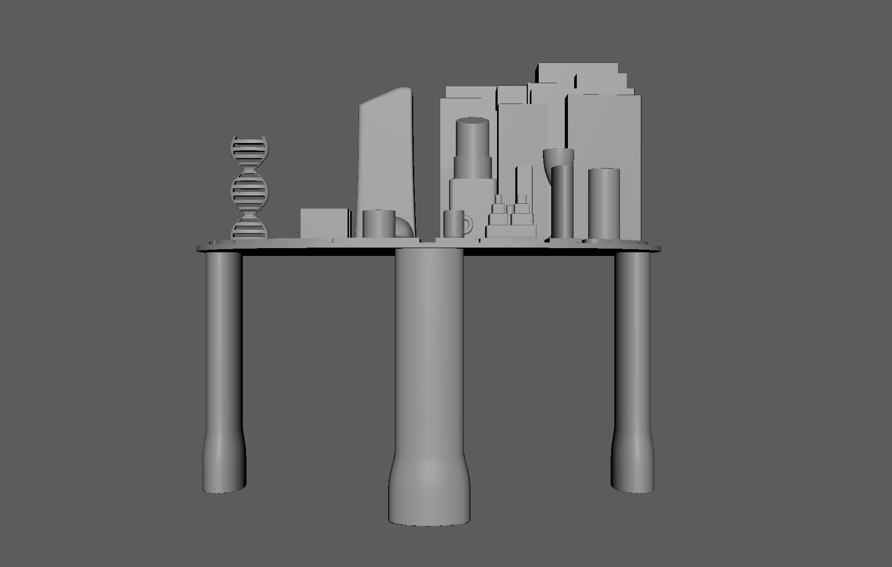
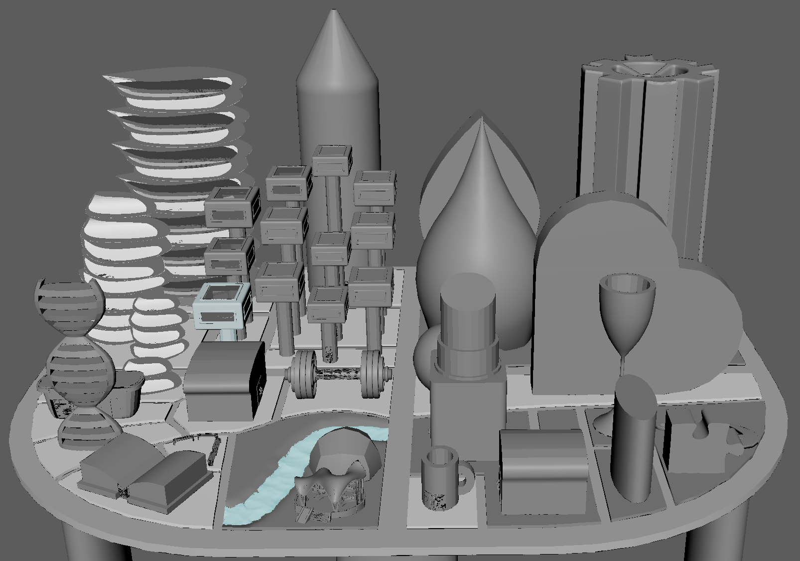
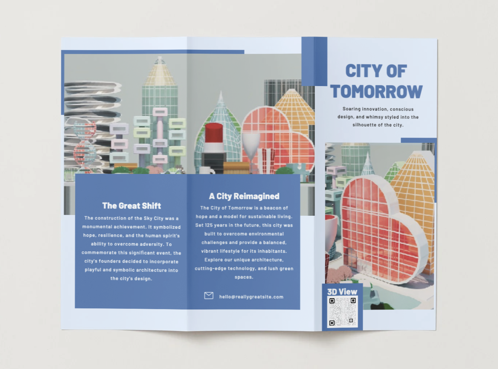
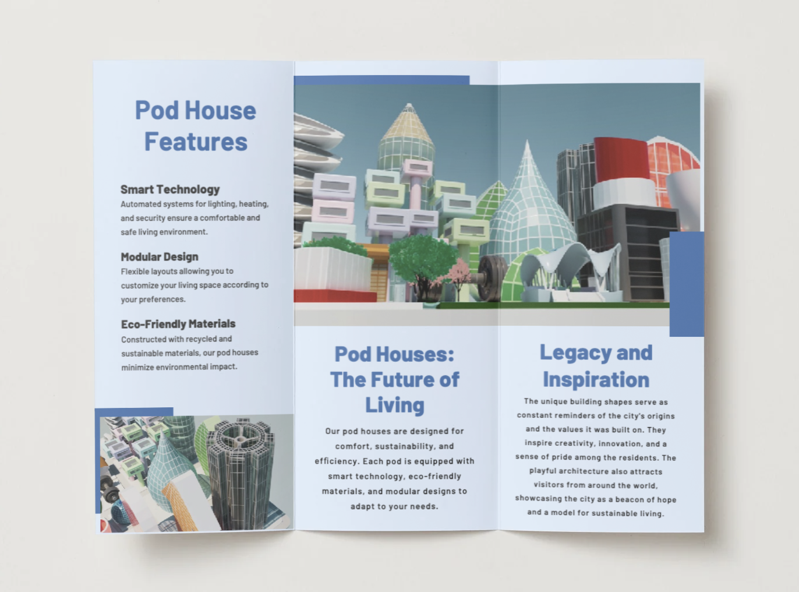
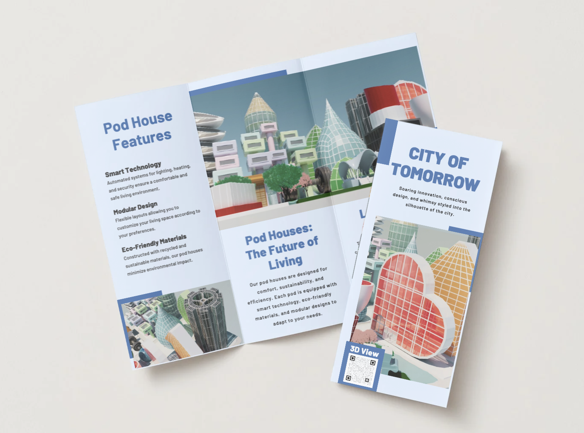
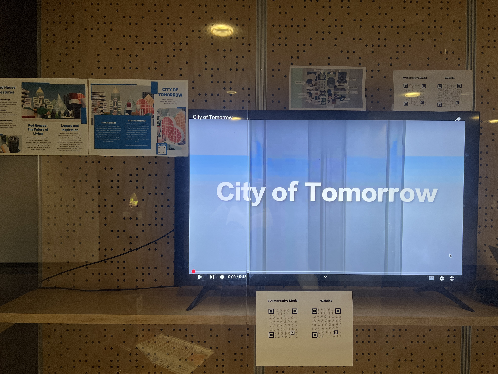
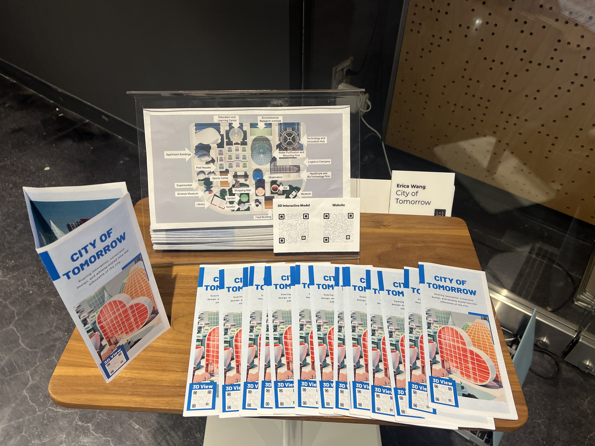
The city's founders made every structure a symbol — a reminder of the values the city was built on and the balance between survival and joy. Each building in the Cultural District takes the shape of an everyday object chosen to reflect its purpose.
The city lives across multiple formats — an interactive 3D model, a rendered fly-through, a 15-week process blog, and a dedicated project site with the full architectural symbolism guide.